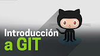
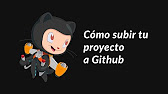

Ves a la
pàgina d'ajuda legal
per sol·licitar canvis de contingut per motius legals.
Enrere
ES
Cerca
Cerca
Cerca
0
Github | ¿Que es? y ¿Como funciona? 2017
Informació
Compres
Toca per activar el so
Si la reproducció no comença aviat, prova de reiniciar el dispositiu.
6:08
6:12
A continuació
Cancel·la
La reproducció automàtica està en pausa
Comparteix
Inclou la llista de reproducció
S'ha produït un error en recuperar la informació compartida. Torna-ho a provar més tard.
Canvia de càmera
0:00
9:50
6:36
/
9:50
En directe
A continuació
Reproducció automàtica
Quan la reproducció automàtica està activada, després del vídeo en curs es reprodueix automàticament un vídeo suggerit.
12:57
Visualitza més tard
Como utilizar GitHub y Git para novatos| Primeros pasos
FISHERMAN SITE
•
1,2m visualitzacions
12:52
Visualitza més tard
¿Cómo usar Git y GitHub fácilmente? (Conceptos muy básicos)
Piensa 3D
•
2,5m visualitzacions
7:51
Visualitza més tard
Curso de Git | Qué es y como funciona Git | Intro
Rails Karate - español
•
16m visualitzacions

1:23:03
Visualitza més tard
Introducción práctica a Git y Github | Cursos Platzi
Platzi
Verificat
•
152m visualitzacions
12:16
Visualitza més tard
¿Qué es Github? ¿Para qué sirve? ¿Cómo se utiliza?
Jean Holguin
•
4,7m visualitzacions
29:31
Visualitza més tard
TE ENSEÑO GIT EN 30 MINUTOS
makigas
•
104m visualitzacions
15:02
Visualitza més tard
Git: Subir un proyecto a Github
DesarrolloWeb.com
•
20m visualitzacions
12:33
Visualitza més tard
Proyectos Open Source en GitHub
Platzi
Verificat
•
6,3m visualitzacions
34:38
Visualitza més tard
How to Get Started with Github - Beginner Tutorial
MicrowaveSam
•
480m visualitzacions
11:52
Visualitza més tard
Aprendiendo a usar GitHub
Jocelyn Rosa
•
5,1m visualitzacions
14:06
Visualitza més tard
TUTORIAL COMPLETO GIT EN ESPAÑOL 2015-2016
TODOS TUS TUTORIALES
•
9m visualitzacions
19:53
Visualitza més tard
Como subir proyecto a GitHub | SourceTree | Bien explicado
Magtimus
•
952 visualitzacions

7:22
Visualitza més tard
Tutorial - Cómo subir un proyecto a Github
codigofacilito
Verificat
•
39m visualitzacions
18:03
Visualitza més tard
Uso básico de GIT con Bitbucket y Sourcetree
Nicolas Battaglia
•
469 visualitzacions
24:13
Visualitza més tard
¿Qué es y como se usa Github?
Víctor Romero Pérez
•
4,3m visualitzacions
32:42
Visualitza més tard
Git & GitHub Crash Course For Beginners
Traversy Media
Verificat
•
196m visualitzacions
22:51
Visualitza més tard
Tutorial básico GIT/GITHUB
Alumnos Udb
•
14m visualitzacions
25:22
Visualitza més tard
Parte1 Instalar Git GitHub tutorial
Dani Reyes
•
582 visualitzacions
9:44
Visualitza més tard
Escalando las Pruebas Automatizadas - Configuracion de Git + GitHub en IntelliJ
Testing en Español
•
245 visualitzacions
14:28
Visualitza més tard
Github 101 for beginners
Hitesh Choudhary
Verificat
•
30m visualitzacions
Mostra'n més
Github | ¿Que es? y ¿Como funciona? 2017
2.517 visualitzacions
2,5m visualitzacions
33
2
Comparteix
33 / 2
GeekTV
Data de publicació: 4 de juny 2017
Subscriu-m'hi
137
Subscribe
Subscribed
Unsubscribe
Hola amigos, hoy les traigo este nuevo videotutorial, espero que les guste y denle manita arriba, suscribanse. Github:
https://github.com/
Repositorio:
https://github.com/JohnMontana/proyec...
Descargar Git:
http://pintient.com/2lxT
Comandos de Git:
http://pintient.com/2lxb
Mostra'n menys
Mostra'n més
ES